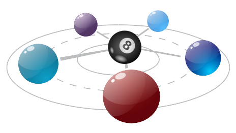
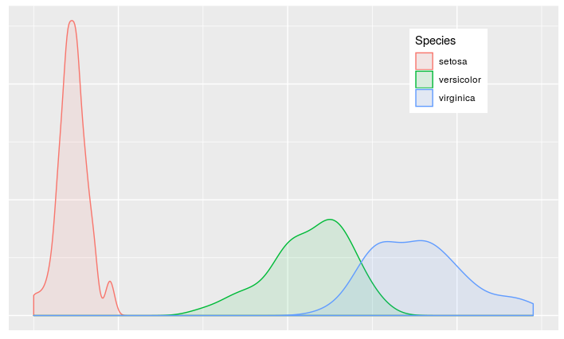
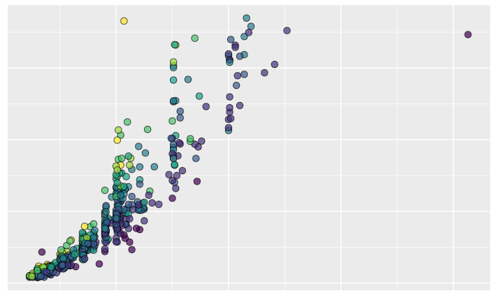
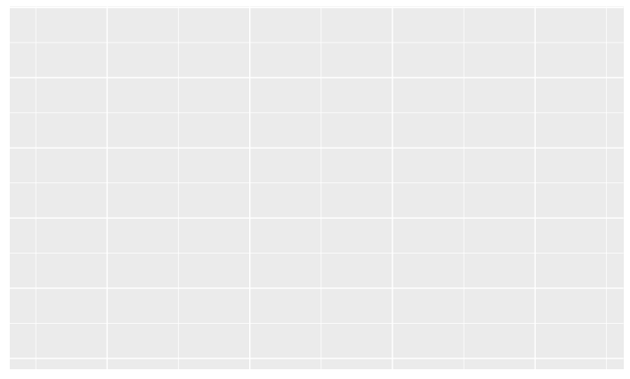
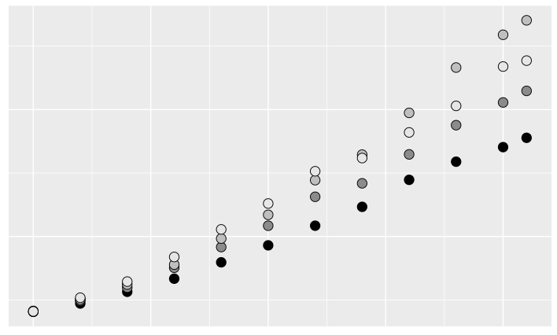

 Data science is a methodical way of processing information to identify patterns and summarize data in order to solve problems and answer questions. Data science is composed of many disciplines including mathematics, computer science and statistics to name a few. To extract value row data have to be transformed, visualized and summarized. The data can then be used by machine learning algorithms to generate model that can be operationalized.
“The goal is to turn data into information, and information into insight.”
Consulting services
I can provide you with best practice work flow of how to gather, transform, summarize and present your findings. Help you extract historical data from your Excel, SQL or any other database you may have. Cleanup, transform and feature engineer your data, and show you how to blend your data with public health, census or other governmental organization data to gain quality reporting. Create geo spatial maps for county, state, country, region and world.

Remote advisory
I can provide you with best practice work flow of how to gather, transform, summarize and present your findings.
Help you extract historical data from your Excel, SQL or any other database you may have.
Cleanup, transform and feature engineer your data
Show you how to blend your data with public health, census or other governmental organization data to gain quality reporting.
Create geo spatial maps for county, state, county, region, world

On Premise
Data import and cleaning
Data blending, transformation and feature engineering
Data driven publication quality graphics
Reproducible interactive documentation with markdown
Dashboards and Web application
Data Modeling* - I use H20 the creator of the leading open source machine learning and artificial intelligence platform where applicable. I do limited number of modeling (mainly linearregression/classification) on your or H2O platform with your data to generate algorithm you can use to manage your organization.
Training - Datviz with ggplot2
“The greatest value of a picture is when it forces us to notice what we never expected to see.”
ggplot2 is a powerful new generation data visualization software that is flexible and highly customizable for plotting data driven graphics. It allows you to generate publication quality graphics and maps. The plots are built layer by layer giving you the flexibilty to modify to your specific requirments. Most newspapers, scientific journal and governamental organizations trust and use ggplot2.
I have four types of training delivered in person or remotely. Namely a half a day introductory calss, a one day initroductoin class, a two intermediate calss and and three advanced class. All classes will have lecture and hands on exercises.

Visualization workshop (half a day)
High level intro to R
Plot type overview (line/bar/point/pie/map)
Working with your spreadsheet (Excel) data
Importing external data with R
Ways of blending and summarizing your data
Generating production quality graphs with colors, fonts and adding interactivity.
Saving your plots in various formats( png, jpeg, svg, tiff)
Building customized themes for your plots

Intro to ggplot2
Building blocks overview
Data variable characteristics
Importing your data to R
Initiate plot
Cartesian coordinate system
Aesthetics - mapping and encoding color, fill, shape
Geometric objects - scatter, bar, line, tile, ribbon